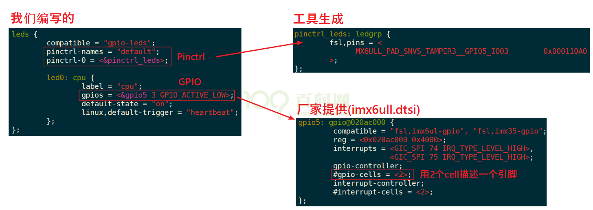

【主线剧情07.2】Linux驱动编程-各种内核机制总结
Linux 驱动编程 - 各种内核机制总结
本文系学习 100ask 手册而做的备查笔记，我优化了一些逻辑，循序渐进，并扩展了一些，适合复习、备查来看，而非新学来看。
在 Github 上的原版文章日后可能会更新，但这里不会跟进。文章的 Gitee 仓库地址，Gitee 访问更流畅。
本文 和 本文对应的源代码 的仓库：仓库地址 Github、Gitee 里面的。本文较多引用 100ask，侵删。
本文 始写于 22.4.20 ，之后暂时搁置剩下了的 定时器、mmap 和 中断上下半部 等内容，这几块内容在 23.3.29-31 补充了（所以你能看见 ChatGPT 的字眼嘿嘿），以及还有其它地方修缮。
仓库中给出的不同程序之间的变化，尤其是 【Linux 通用驱动开发】\基本字符设备驱动程序-输入-各种内核机制总结 里面的各个例程的演化，可以用 对比工具 查看增减的内容，抓住核心，比如 notepad– 自带的 对比文件 工具。
本目录文件树如下：
|
|
概念
应用程序 APP 的读取驱动程序的四种基本方式：阻塞、非阻塞、poll 和 异步通知（注册SIGIO信号回调函数。信号之于应用程序，相当于中断之于驱动程序）。这部分详见 【Linux 应用开发】\1-文件io读写的基本四种机制 里的介绍和例子。
相应的 驱动程序 也类似的提供这四种基本的 读取和上报应用程序的 编写模式。
因此驱动程序支持这四种的哪一种方式或多种，应用程序才能使用哪一种或多种方式进行数据获取，应用程序的写法是与驱动程序所提供的功能紧密相关的。
驱动程序提供能力，不提供策略
我们的驱动程序可以实现下述4种提供按键的方法，但是驱动程序不应该限制APP使用哪种方法。
这就是驱动设计的一个原理：提供能力，不提供策略。就是说，你想用哪种方法都行，驱动程序都可以提供；但是驱动程序不能限制你使用哪种方法。
驱动程序程序“只提供功能，不提供策略”。就是说驱动程序可以提供休眠唤醒、查询等等各种方式，，驱动程序只提供这些能力，怎么用由APP决定。
查询（相当于应用程序的 非阻塞方式获取）：
驱动程序中构造、注册一个file_operations结构体，里面提供有对应的open,read函数。APP调用open时，导致驱动中对应的open函数被调用，在里面配置GPIO为输入引脚。APP调用read时，导致驱动中对应的read函数被调用，它读取寄存器，把引脚状态直接返回给APP。
休眠-唤醒（相当于应用程序的 阻塞方式获取）：
- 驱动程序中构造、注册一个file_operations结构体，里面提供有对应的open,read函数。
- APP调用open时，导致驱动中对应的open函数被调用，在里面配置GPIO为输入引脚；并且注册GPIO的中断处理函数。
- APP调用read时，导致驱动中对应的read函数被调用，如果有按键数据则直接返回给APP；否则APP在内核态休眠。
- 当用户按下按键时，GPIO中断被触发，导致驱动程序之前注册的中断服务程序被执行。它会记录按键数据，并唤醒休眠中的APP。
- APP被唤醒后继续在内核态运行，即继续执行驱动代码，把按键数据返回给APP(的用户空间)。
poll 方式（相当于应用程序的 poll方式获取）：
使用休眠-唤醒的方式等待某个事件发生时，有一个缺点：等待的时间可能很久。我们可以加上一个超时时间，这时就可以使用poll机制。
① APP不知道驱动程序中是否有数据，可以先调用poll函数查询一下，poll函数可以传入超时时间；
② APP进入内核态，调用到驱动程序的poll函数，如果有数据的话立刻返回；
③ 如果发现没有数据时就休眠一段时间；
④ 当有数据时，比如当按下按键时，驱动程序的中断服务程序被调用，它会记录数据、唤醒APP；
⑤ 当超时时间到了之后，内核也会唤醒APP；
⑥ APP根据poll函数的返回值就可以知道是否有数据，如果有数据就调用read得到数据
异步通知 方式（相当于应用程序的 异步通知方式获取）：
- 异步通知的实现原理是：内核给APP发信号。信号有很多种，这里发的是SIGIO。
- 驱动程序中构造、注册一个file_operations结构体，里面提供有对应的open,read,fasync函数。
- APP调用open时，导致驱动中对应的open函数被调用，在里面配置GPIO为输入引脚；并且注册GPIO的中断处理函数。
- APP给信号SIGIO注册自己的处理函数：my_signal_fun。
- APP调用fcntl函数，把驱动程序的flag改为FASYNC，这会导致驱动程序的fasync函数被调用，它只是简单记录进程PID。
- 当用户按下按键时，GPIO中断被触发，导致驱动程序之前注册的中断服务程序被执行。它会记录按键数据，然后给进程PID发送SIGIO信号。
- APP收到信号后会被打断，先执行信号处理函数：在信号处理函数中可以去调用read函数读取按键值。信号处理函数返回后，APP会继续执行原先被打断的代码。
应用程序注册信号回调函数的例子见：
【Linux 应用开发】\1-文件io读写的基本四种机制\例程-来自百问网\05_input_read_fasync.c。关于 信号（signal）详解可见 （真正全）Linux进程和线程的基本编程、通讯和例程【杂记】_Real-Staok的博客-CSDN博客 里的
信号（Signal）一节。
在 shell 中给进程发信号：
假定应用程序叫 signal。
1 2 3./signal & // 后台运行 ps -A | grep signal // 查看进程ID，假设是 9527 kill -SIGIO 9527 // 给这个进程发名为 SIGIO 的信号
注意：所有 应用程序 与 驱动程序 相互收发的机制，包括 read/write/ioctl，还有 poll、异步通知、mmap 等，都要在 设备文件 被打开 的状态 下去执行，否则啥也得不到。
查询方式-非阻塞
本节的源码路径：查询方式-非阻塞\。
我们的目的写出一个容易扩展到各种芯片、各种板子的按键驱动程序，所以驱动程序分为上下两层：
① button_drv.c分配/设置/注册file_operations结构体
起承上启下的作用，向上提供button_open,button_read供APP调用。
而这2个函数又会调用底层硬件提供的p_button_opr中的init、read函数操作硬件。
② board_xxx.c分配/设置/注册button_operations结构体
这个结构体是我们自己抽象出来的，里面定义单板xxx的按键操作函数。
这样的结构易于扩展，对于不同的单板，只需要替换board_xxx.c提供自己的button_operations结构体即可。
这里的程序结构与 【Linux 驱动开发】\基本字符设备驱动程序-输出\进化1_外设操作和驱动程序分离 和 【Linux 驱动开发】\基本字符设备驱动程序-输出\进化2_支持多种板子 一致，都是驱动程序单独出来，外设资源和外设操作 都放在另一个文件里面，外设操作（如初始化、读、写等）的 函数API 都打包放进 一个结构体 struct button_operations，然后 驱动程序 调用这个结构体里面的操作函数来操作硬件即可。
两个文件分别编译为两个模块，先加载驱动程序的模块，再才能加载 外设操作程序的模块。外设操作程序的模块在被加载的时候 才会调用 创建设备 （device_create），该模块卸载时候 再删除设备 （device_destroy）。
非阻塞方式 写的要点：
- 在驱动程序的 read()、write() 还有 ioctl() 等等里面 不要加任何阻塞的函数，只运行一遍立马退出，这么写，就是非阻塞，
- 应用程序 open 时候 传入 O_NONBLOCK 标志（因此驱动程序写的时候应该保证 不要有任何阻塞的语句），应用程序 read 的时候，驱动程序里面 read 没有阻塞的相关东西，运行一遍然后返回直接返回结果。
几个注意：
- APP调用open函数时，传入 O_NONBLOCK，就表示要使用非阻塞方式；默认是阻塞方式。
|
|
- 对于普通文件、块设备文件，O_NONBLOCK不起作用。
- 对于字符设备文件，O_NONBLOCK 起作用的前提是驱动程序针对O_NONBLOCK做了处理。
在 open之后，也可以通过 fcntl 修改为阻塞或非阻塞：
|
|
模块装载完毕之后，进行测试 01_button_drv_template：
|
|
参考 100ask 的 04_button_drv。
ioctl 的使用
可以参考：
- Linux驱动学习6（ioctl的实现） - 灰信网（软件开发博客聚合） (freesion.com)。
- （八）linux驱动之ioctl的使用 - 灰信网（软件开发博客聚合） (freesion.com)。
- linux驱动开发(四)：ioctl()函数_精致的螺旋线的博客-CSDN博客_ioctl函数linux。
例子：
|
|
GPIO、Pinctrl 子系统的使用
本节的源码路径：gpio_and_pinctrl\ 文件夹下。
教程 可看 100ask 手册 嵌入式Linux应用开发完全手册V5_IMX6ULL_Pro开发板.pdf 中的 第16章 GPIO和 Pinctrl子系统的使用 一章，
或 视频 Pinctrl子系统重要概念-【第5篇】嵌入式Linux驱动开发基础知识_哔哩哔哩_bilibili 以及这个视频后面的几个视频连着看。
例子 【Linux 通用驱动开发】\基本字符设备驱动程序-输入\gpio_and_pinctrl，引自 100ask 05_gpio_and_pinctrl。
（后面的几段话是理解之后的描述，没学应该先去看教程）
后面的例子使用到 GPIO、Pinctrl 子系统。GPIO、Pinctrl 子系统 即 按照一定规则编写设备树的某些节点的属性和值，然后内核提供一些专用的 API 在驱动程序中来读取这些节点的属性，进而来方便的设置 IO 的 方向、值 等等。Pinctrl 用于引脚配置（配置为 GPIO 还是 复用为 I2C 等其它外设的引脚），GPIO 子系统就用于标记出要使用哪些 IO 、配置引脚方向 和 把引脚配置为输入、输出等简单的功能（供驱动程序获取），注意：一个是相当于设置 IO 的 IOMUX，另一个是 使用 IO，要用到某一个 IO 时候这两处都要在设备树中设置一下。当驱动 drive 与 设备树 中的 设备节点 匹配之后，会自动根据里面的值去配置 IO，包括 default 状态和 sleep 状态，是内核自动完成的。
实现的效果就是：修改设备树，驱动里面调用 gpiod_xxx() 等相关的 API 来获取该 GPIO 并控制其 方向、值 等等，就这样。
要操作GPIO引脚，先把所用引脚配置为GPIO功能，这通过Pinctrl子系统来实现。
然后就可以根据设置引脚方向(输入还是输出)、读值──获得电平状态，写值──输出高低电平。
以前我们通过寄存器来操作GPIO引脚，即使LED驱动程序，对于不同的板子它的代码也完全不同。
当BSP工程师实现了GPIO子系统后，我们就可以：
a. 在设备树里指定GPIO引脚
b. 在驱动代码中：
使用GPIO子系统的标准函数获得GPIO、设置GPIO方向、读取/设置GPIO值。
这样的驱动代码，将是单板无关的。
对于使用来讲：对于 Pinctrl 子系统，是在 设备树中相应的 子节点下 要先有 pinctrl 的子节点，在里面写好各个 IO 配置为某个功能（①这个一般芯片厂家会提供，看看 公板/评估板 的 BSP 里面的 设备树，这个里面的 pinctrl 子节点 是 BSP工程师写好提供的，②会有工具软件来生成（如 imx 的 Pins_Tool_for_i.MX...工具），主要用于用户自己用到一些 IO，③如果没有生成工具就自己参考着来了，参考提供的文档或设备树源码），然后在自己的板子的设备树中去定义自己这个设备的节点（如果是用户自定IO，即 设备树里面没有要用的 pinctrl 的子节点，那么就按照前面 的方法来自己加上），在里面调用前面的 pinctrl 的子节点来设置板子上的 IO 功能，即设置 pinctrl-name = "default", "sleep", ...; pinctrl-0 = <&...>; 等这类属性。对于 GPIO 子系统，即在自己板子的设备树的该节点（自己这个设备的节点） 里 继续写 xxx-gpios = <&... ... GPIO_ACTIVE_HIGH/LOW>;等这种属性，驱动在与设备匹配（通过 compatible 属性等）之后 自动解析这些设备树节点和属性 并据此 配置指定的 IO，然后驱动可以调用 gpiod_xxx() 等相关的 API 来控制 IO 的 方向、值 等等。
一个设备树中方使用 GPIO、Pinctrl 的例子：

对上图说明：其中在 自己板子的设备树的 最外层 定义一个 IO 的节点（左边），pinctrl-0 引用 生成的 IO MUX 配置信息节点（右上），然后在左边可以直接继续写 xxx-gpios = <&... ... GPIO_ACTIVE_HIGH/LOW>; 或者再定义一个子节点然后在里面写。然后就可以在驱动程序中的 probe 函数中 获取 该 IO、配置方向 和 读写了。还要确定该引脚没有其它节点使用，直接搜索 xxx-gpios = <&... ... GPIO_ACTIVE_HIGH/LOW>; 的 < > 里面的内容找到其它用到 该 GPIO 的节点，然后可以在其中添加 status = "disabled"; 即可将其禁用。注意这个例子是 imx6ull 的，不同 SoC 设备树的写法会有变化，多变通。
引入 这两个子系统后，对于板子的区分 就依靠 设备树，驱动程序里面可以根据设备树里面指定的资源来编写 外设操作相关的程序，如果驱动程序编写的好，那么更换板子的时候驱动程序几乎不用更改，只修改设备树，那么这就是做的很漂亮、很优雅的活儿。
参考 100ask 的 05_gpio_and_pinctrl。
最后补充：
-
pin controller 相当于软件设置 gpio 进行 mux，其节点的格式，没有统一的标准，包括 group、function 关键字也不一定有，每家芯片都不一样，但是概念是通用的。Linux 内核提供 读 pin controller 节点信息 的函数，这是 BSP 工程师 做好的事情，用户只用
pinctrl-name = "default", "sleep", ...; pinctrl-0 = <&...>;来调用。具体看100ask对GPIO和Pinctrl子系统简明介绍.docx的 “16.1.4 代码中怎么引用pinctrl” 有简单介绍。 -
gpio-controller 相当于软件设置 gpio 进行设置方向、读写等，其节点格式都比较类似，是 BSP 工程师 做好的事情，用户只用
[<name>-]gpios = <&... ... GPIO_ACTIVE_HIGH/LOW>;来调用。GPIO子系统有两套接口：基于描述符的(descriptor-based)、老的(legacy)。前者的函数都有前缀“gpiod _”，它使用gpio_desc结构体来表示一个引脚；后者的函数都有前缀“gpio _”，它使用一个整数来表示一个引脚。
要操作一个引脚，首先要get引脚，然后设置方向，读值、写值。
头文件
#include <linux/gpio/consumer.h> // descriptor-based或#include <linux/gpio.h> // legacy。下表列出常用的函数：
descriptor-based legacy 获得GPIO gpiod_get gpio_request gpiod_get_index gpiod_get_array gpio_request_array devm_gpiod_get devm_gpiod_get_index devm_gpiod_get_array 设置方向 gpiod_direction_input gpio_direction_input gpiod_direction_output gpio_direction_output 读值、写值 gpiod_get_value gpio_get_value gpiod_set_value gpio_set_value 释放GPIO gpio_free gpio_free gpiod_put gpio_free_array gpiod_put_array devm_gpiod_put devm_gpiod_put_array - “gpio” 后面带有 “d” 的是基于 gpio_desc 结构体来确定 哪一个 gpio 的，而不带 “d” 的是 基于 gpio 号 的。
- 有前缀“devm_”的含义是“设备资源管理”(Managed Device Resource)，这是一种自动释放资源的机制。它的思想是“资源是属于设备的，设备不存在时资源就可以自动释放”。比如在Linux开发过程中，先申请了GPIO，再申请内存；如果内存申请失败，那么在返回之前就需要先释放GPIO资源。如果使用devm的相关函数，在内存申请失败时可以直接返回：设备的销毁函数会自动地释放已经申请了的GPIO资源。
- 建议使用“devm_”版本的相关函数。
-
去看 gpio_and_pinctrl 文件夹里的例子 就好理解了。
GPIO 相关 API 详细介绍
一文讲清楚 Linux内核GPIO子系统分析_奔跑的码仔的博客-CSDN博客 好文。
Linux驱动编程操作GPIO的简要说明_平仄散人的博客-CSDN博客_of_get_gpio_flags。
中断方式 + 休眠-唤醒
现在新出的 ARM SoC 都使用 中断控制器 (Generic Interrupt Controller，GIC) 来统一接管所有外设的中断信号，当有一个或一些外设向 CPU 发出中断信号时 GIC 根据其优先级选出一路中断信号 送达 CPU，然后 CPU 跳转到 异常向量表中的 中断处理函数（这些都是硬件完成的），然后进行现场保护、跳转到处理函数，从中断中退出后 进行现场恢复（这些都是软件完成的）。关于 ARM SoC 处理器架构、启动文件 和 GIC 结构的更多 可参考 (主线剧情01-ARM-IMX6ULL基础学习记录_Real-Staok的博客-CSDN博客，主线剧情-番外01-ARM系列快速鸟瞰_Real-Staok的博客-CSDN博客，看一看会更佳的了解系统。
GIC v3/v4用于 ARMv8 架构，即64位ARM芯片。
而GIC v2用于ARMv7和其他更低的架构。
注意：如果想深入理解ARM处理器架构，应该从裸机开始学习。注意：如果为了加快学习速度，从实践角度入手，建议先不看裸机。
对硬件中断的处理的原则
对硬件中断的处理 有 原则：不能嵌套，越快越好。
不能嵌套：为了防止中断嵌套时候栈空间猛增等原因，也是为了简单化中断的处理，在Linux系统上中断无法嵌套：即当前中断A没处理完之前，不会响应另一个中断B(即使它的优先级更高)。
越快越好：在中断的处理过程中，该CPU是不能进行进程调度的，所以中断的处理要越快越好，尽早让其他中断能被处理──进程调度靠定时器中断来实现。在单芯片系统中，假设中断处理很慢，那应用程序在这段时间内就无法执行：系统显得很迟顿。在SMP系统中，假设中断处理很慢，那么正在处理这个中断的CPU上的其他线程也无法执行。
Linux 中断系统的重要数据结构
看 Linux中断系统的重要数据结构——【第5篇】嵌入式Linux驱动开发基础知识_哔哩哔哩_bilibili，
或详看 中断方式+休眠-唤醒 文件夹里面的 100ask 的 Linux中断系统中的重要数据结构简明介绍 文档和图片。
看一下有助于对中断过程中内核处理的逻辑和过程的了解。
Linux 内核的中断处理机制，源码详细分析：Linux中断管理 (1)Linux中断管理机制 - ArnoldLu - 博客园 (cnblogs.com)。
基本设置设备树、申请中断
在设备树中定义中断
首先，定义 interrupt-controller 节点一般是 BSP 的设备树 写好的，其次，在自己的板子的设备树中定义要用那个 io 作为 irq，则在自己设备节点中使用 interrupt-parent = <&哪一个外设>; 引用即可，然后用 interrupt = <信号脚 RISING/FALLING/BOTH>; 声明这个外设的具体哪个信号线和是什么电平触发，最后，用某个 io 作为中断，设备树中一般 用在 自己定义的某个 通讯接口的 设备节点里，比如 spi设备节点、i2c设备节点等 里面，而如果是单独定义一个独立的 io 作为中断（不是在 某个 spi/i2c等的设备节点里面），那就不用 定义 interrupt-parent 和 interrupt 属性，因为所有 gpio 在芯片硬件和软件 BSP 里面都可以作为中断，都做好了。
|
|
在 spi/i2c 设备节点里面定义中断的例子：
|
|
引自 设备树中的中断节点以及相关函数-28_杨斌并的博客-CSDN博客。
1 2 3 4 5 6 7 8 9 10 11 12 13 14 15 16 17 18 19 20 21 22 23 24 25 26 27 28 29比如，对于GPI0来说，GPI0的节点也可以作为中断控制器，在 imxbull.dtsi 文件中 GPI01的节点内容如下所示： 这是 定义 interrupt-controller，是 BSP 中写好的 gpio1: gpio@e209ceee { compatible = "fsl,imx6ul-gpio","fs1,imx35-gpio"; reg = <ex0209ce0e ex4000>; interrupts = <GIC_SPI 66 IRQ_TYPE_LEVEL_HIGH>, <GIC_SPI 67 IRQ_TYPE_LEVEL_HIGH>; gpio-controller; #gpio-cells = <2>; interrupt-controller; #interrupt-cells =<2>; }; 在我们自己的设备树里面描述一个外设的中断节点， key { #address-cells = <1>; #size-cells =<1>; compatible = "key"; // 用于匹配 driver pinctrl-names = "default"; // pinctrl 子系统 pinctrl-0 =<&pinctrl_key>; // 把管脚设置为 gpio 功能（而不是用于其它外设的引脚） key-gpio = <&gpio1 18 GPIO_ACTIVE_LOW>; // gpio 子系统 // 使用 interrupt-parent 和 interrupts 属性来描述中断 （其实不写这里 软件里也可以设置中断 interrupt-parent = <&gpio1>; // 指示用到的 interrupt 控制器，设置的是中断源 interrupts = <18 IRQ_TYPE_EDGE_BOTH>; // 指示用到的 interrupt 控制器下面的哪一个 信号脚 和 触发电平 status ="okay"; // 表示启用，写 disabled 表示不用/禁用 }新写法：一个 “interrupts-extended” 属性就可以既指定 “interrupt-parent”，也指定 “interrupts”，比如：
1interrupts-extended = <&intc1 5 1>, <&intc2 1 0>; // 这是定义了两个 IO 的中断
内核解析设备树后，将该设备节点 转化为 platform_device，并通过相关函数将 硬件中断号 hwirq 映射为（虚拟）中断号 irq，并保存在 platform_device 结构体里面，使用 request_irq 注册 中断处理函数 的时候 就用到这个 中断号 irq。
得到中断号 irq
- 一个节点能被转换为 platform_device，如果它的设备树里指定了中断属性，那么可以使用 platform_device 获得“中断资源”，可以使用下列函数获得 IORESOURCE_IRQ 资源，即中断号：
struct resource *platform_get_resource(struct platform_device *dev, unsigned int type, unsigned int num);。 - 对于I2C设备、SPI设备：在 driver 与 device 匹配之后，调用 内核的 i2c/spi 相关的函数 xxx_probe 来将 i2c/spi 设备 platform_device 转化为 i2c_client 和 spi_device，并且使用 of_irq_get() 取出中断号 irq 赋值给 结构体里面的 irq 成员。
- 一个 I2C 设备会被转换为一个 i2c_client 结构体，中断号会保存在 i2c_client 的 irq 成员里。
- 一个 SPI 设备会被转换为一个 spi_device 结构体，中断号会保存在 spi_device 的 irq 成员里。
- 如果你的设备节点既不能转换为 platform_device，它也不是I2C设备，不是SPI设备，那么在驱动程序中可以自行调用 of_irq_get 函数去解析设备树，得到中断号。
- 通过设备节点 struct device_node 返回中断号 irq 的函数
unsigned int irq of_parse_and_map(struct device_node *dev,int index)。 - 通过设备节点 struct device_node 返回 gpio 号 使用
of_get_gpio_flags或of_get_named_gpio_flags，再用gpio_to_irq通过 gpio 号得到 irq 号。第一个 API 得到的 flag 可以直接传入 request_irq。另外 可以使用gpio_to_desc通过 gpio 号来获得 struct gpio_desc 进而使用gpiod_xxx()来 设置方向、读写 等等。- 参考程序：100ask 的
01_all_series_quickstart\05_嵌入式Linux驱动开发基础知识\source\06_gpio_irq\01_simple\gpio_key_drv.c。 - 参考：Linux驱动编程操作GPIO的简要说明_平仄散人的博客-CSDN博客_of_get_gpio_flags，这个里面 获取 gpio 的相关 API 使用的是 通过 名字字符串 来找到，我觉得不如 上面 100ask 例子里面的，都是通过 设备节点来寻找 而不是通过字符串。
- 参考程序：100ask 的
申请中断
参考 100ask、设备树中的中断节点以及相关函数-28_杨斌并的博客-CSDN博客，request_irq() | 注册中断服务_专注android开发的博客-CSDN博客_request_irq。
|
|
中断成功后可以通过下面的指令查看
cat /proc/irq/申请的中断号/spurious。
本节的程序例子见文件夹 【Linux 驱动开发】\基本字符设备驱动程序-输入\中断方式+休眠-唤醒\simple，引自 100ask 的 01_simple。设备树的修改方法见同目录下的 本节设备树的修改.docx 文件。
下面 休眠-唤醒、Poll 机制 和 异步通知机制 三种驱动编写 都是基于 中断 的。
休眠-唤醒 机制 - 且同时支持阻塞和非阻塞
当应用程序必须等待某个事件发生，比如必须等待按键被按下时，可以使用“休眠-唤醒”机制：
① APP调用read等函数试图读取数据，比如读取按键；
② APP进入内核态，也就是调用驱动中的对应函数，发现有数据则复制到用户空间并马上返回；
③ 如果APP在内核态，也就是在驱动程序中发现没有数据，则APP休眠；所谓休眠就是把自己的状态改为非RUNNING，这样内核的调度器就不会让它运行。
④ 当有数据时，比如当按下按键时，驱动程序的中断服务程序被调用，它会记录数据、唤醒APP；唤醒就是把程序的状态改为RUNNING，这样内核的调度器有合适的时间就会让它运行。
⑤ APP继续运行它的内核态代码，也就是驱动程序中的函数，复制数据到用户空间并马上返回。
在中断处理函数中，不能休眠，也就不能调用会导致休眠的函数。
休眠函数
参考内核源码：include\linux\wait.h。
函数 说明 wait_event_interruptible(wq, condition) 休眠，直到condition为真； 休眠期间是可被打断的，可以被信号打断 wait_event(wq, condition) 休眠，直到condition为真； 退出的唯一条件是condition为真，信号也不能打断 wait_event_interruptible_timeout(wq, condition, timeout) 休眠，直到condition为真或超时； 休眠期间是可被打断的，可以被信号打断 wait_event_timeout(wq, condition, timeout) 休眠，直到condition为真或超时； 退出的唯一条件是condition为真，信号也不好使 比较重要的参数就是：
① wq：waitqueue，等待队列
休眠时除了把程序状态改为非RUNNING之外，还要把进程/进程放入wq 中，以后中断服务程序要从wq中把它取出来唤醒。
② condition
这可以是一个变量，也可以是任何表达式。表示“一直等待，直到condition为真”。
唤醒函数
参考内核源码：include\linux\wait.h。
函数 说明 wake_up_interruptible(x) 唤醒x队列中状态为“TASK_INTERRUPTIBLE”的线程，只唤醒其中的一个线程 wake_up_interruptible_nr(x, nr) 唤醒x队列中状态为“TASK_INTERRUPTIBLE”的线程，只唤醒其中的nr个线程 wake_up_interruptible_all(x) 唤醒x队列中状态为“TASK_INTERRUPTIBLE”的线程，唤醒其中的所有线程 wake_up(x) 唤醒x队列中状态为“TASK_INTERRUPTIBLE”或“TASK_UNINTERRUPTIBLE”的线程，只唤醒其中的一个线程 wake_up_nr(x, nr) 唤醒x队列中状态为“TASK_INTERRUPTIBLE”或“TASK_UNINTERRUPTIBLE”的线程，只唤醒其中nr个线程 wake_up_all(x) 唤醒x队列中状态为“TASK_INTERRUPTIBLE”或“TASK_UNINTERRUPTIBLE”的线程，唤醒其中的所有线程
做法就是：
- 初始化 wq 队列
static DECLARE_WAIT_QUEUE_HEAD(wq);。 - 在驱动的 read 函数中，调用
wait_event_interruptible(wq, event);，它会判断 event 是否为 FALSE，如果为 FASLE 则休眠。 - 在中断服务程序里，读取摁键的值，若被摁下，则设置 event 为 TRUE，并调用
wake_up_interruptible(wq);唤醒线程（只调用 wake_up_interruptible() 还不行，必须还得先将 等待条件/event 设为真）。
本节程序例子 基本字符设备驱动程序-输入\中断方式+休眠-唤醒\休眠-唤醒机制\read_key_irq_wait。
read_key_irq_wqit-circle_buffer 这个例子是使用环形队列来 存储和取出 按键的值。本例子 需要修改设备树，设备树的修改已经写到了 read_key_irq_wait 例子里 驱动程序开头 的注释里。例子引自 100ask 的 02_read_key_irq 和 03_read_key_irq_circle_buffer 。
驱动程序，挑出核心的
1 2 3 4 5 6 7 8 9 10 11 12 13 14 15 16 17 18 19 20 21 22 23static DECLARE_WAIT_QUEUE_HEAD(gpio_key_wait); static ssize_t gpio_key_drv_read (struct file *file, char __user *buf, size_t size, loff_t *offset) { int err; wait_event_interruptible(gpio_key_wait, g_key); 在这里休眠，等待条件变真和被唤醒 err = copy_to_user(buf, &g_key, 4); g_key = 0; return 4; } static irqreturn_t gpio_key_isr(int irq, void *dev_id) { struct gpio_key *gpio_key = dev_id; int val; val = gpiod_get_value(gpio_key->gpiod); printk("key %d %d\n", gpio_key->gpio, val); g_key = (gpio_key->gpio << 8) | val; 条件设置为真 wake_up_interruptible(&gpio_key_wait); 唤醒 return IRQ_HANDLED; }应用程序，挑出核心的
1 2 3 4 5 6 7 8 9 10 11 12 13 14 15fd = open(argv[1], O_RDWR); if (fd == -1) { printf("can not open file %s\n", argv[1]); return -1; } while (1) { /* 3. 读文件 */ read(fd, &val, 4); printf("get button : 0x%x\n", val); } close(fd);
上面 驱动里面 read() 是 不管有没有 O_NONBLOCK 标志，只要应用调用 驱动的 read()，在 没有数据/没有唤醒 的时候 就会阻塞住！
回顾上面 ”查询方式-非阻塞“ 一节的这个内容：
几个注意：
- APP调用open函数时，传入 O_NONBLOCK，就表示要使用非阻塞方式；默认是阻塞方式。
1 2 3open时设置： int fd = open(“/dev/xxx”, O_RDWR | O_NONBLOCK); /* 非阻塞方式 */ int fd = open(“/dev/xxx”, O_RDWR ); /* 阻塞方式 */
- 对于普通文件、块设备文件，O_NONBLOCK不起作用。
- 对于字符设备文件，O_NONBLOCK 起作用的前提是驱动程序针对O_NONBLOCK做了处理。
在 open之后，也可以通过 fcntl 修改为阻塞或非阻塞：
1 2 3 4open之后设置： int flags = fcntl(fd, F_GETFL); fcntl(fd, F_SETFL, flags | O_NONBLOCK); /* 非阻塞方式 */ fcntl(fd, F_SETFL, flags & ~O_NONBLOCK); /* 阻塞方式 */
下面让驱动程序 根据 O_NONBLOCK 标志位 同时支持 阻塞和非阻塞，就是让 O_NONBLOCK 这个标志位起作用~：
驱动里面 核心的 read() 改动的地方 拿过来：
|
|
引自 100ask 手册：从驱动代码也可以看出来，当 APP 打开某个驱动时，在内核中会有一个struct file 结构体对应这个驱动，这个结构体中有 f_flags，就是打开文件时的标记位；可以设置 f_flasgs的O_NONBLOCK位，表示非阻塞；也可以清除这个位表示阻塞。
驱动程序要根据这个标记位决定事件未就绪时是休眠和还是立刻返回。
驱动程序程序“只提供功能，不提供策略”。就是说驱动程序可以提供休眠唤醒、查询等等各种方式，，驱动程序只提供这些能力，怎么用由 APP决定。
——————————————————————————
100ask 赠送一个 环形缓冲程序：
1 2 3 4 5 6 7 8 9 10 11 12 13 14 15 16 17 18 19 20 21 22 23 24 25 26 27 28 29 30 31 32 33 34 35 36 37 38/* 环形缓冲区 */ #define BUF_LEN 128 static int g_keys[BUF_LEN]; static int r, w; #define NEXT_POS(x) ((x + 1) % BUF_LEN) /* 0~127 循环 */ static int is_key_buf_empty(void) { return (r == w); } static int is_key_buf_full(void) { return (r == NEXT_POS(w)); /* 下一个写的位置 w 等于读的位置 r 则认为满 */ } static int put_key(int key) { if (!is_key_buf_full()) /* 如果满则不能存 */ { g_keys[w] = key; /* 存储输入值 */ w = NEXT_POS(w); /* w 索引值 +1 */ return 0; } return -1; } static int get_key(void) { int key = 0; if (!is_key_buf_empty()) /* 如果空则不能读 */ { key = g_keys[r]; /* 取出 */ r = NEXT_POS(r); /* r 索引值 +1 */ } return key; }
中断方式 + Poll 机制
使用 poll 机制 加上一个等待时间，超时 或 有数据 都会返回，根据返回值来区分，若为 有数据的 情况，则直接 read() 即可。相当于 阻塞 + 一个超时时间 的机制。
流程示意图
函数执行流程如上图①～⑧所示，重点从③开始看。假设一开始无按键数据：
③ APP调用poll之后，进入内核态；
④ 导致驱动程序的drv_poll被调用：
注意，drv_poll要把自己这个线程挂入等待队列wq中；假设不放入队列里，那以后发生中断时，中断服务程序去哪里找到你嘛？
drv_poll还会判断一下：有没有数据啊？返回这个状态。
⑤ 假设当前没有数据，则休眠一会；
⑥ 在休眠过程中，按下了按键，发生了中断：
在中断服务程序里记录了按键值，并且从wq中把线程唤醒了。
⑦ 线程从休眠中被唤醒，继续执行for循环，再次调用drv_poll：
drv_poll返回数据状态
⑧ 哦，你有数据，那从内核态返回到应用态吧
⑨ APP调用read函数读数据
如果一直没有数据，调用流程也是类似的，重点从③开始看，如下：
③ APP调用poll之后，进入内核态；
④ 导致驱动程序的drv_poll被调用：
注意，drv_poll要把自己这个线程挂入等待队列wq中；假设不放入队列里，那以后发生中断时，中断服务程序去哪里找到你嘛？
drv_poll还会判断一下：有没有数据啊？返回这个状态。
⑤ 假设当前没有数据，则休眠一会；
⑥ 在休眠过程中，一直没有按下了按键，超时时间到：内核把这个线程唤醒；
⑦ 线程从休眠中被唤醒，继续执行for循环，再次调用drv_poll：
drv_poll返回数据状态
⑧ 哦，你还是没有数据，但是超时时间到了，那从内核态返回到应用态吧
⑨ APP不能调用read函数读数据

程序例子见 “中断方式+Poll机制” 文件夹下。引自 100ask 的 04_read_key_irq_poll。
使用poll机制时，驱动程序的核心就是提供对应的drv_poll函数。
在drv_poll函数中要做2件事：
① 把当前线程挂入队列wq：poll_wait
- APP调用一次poll，可能导致drv_poll被调用2次（或多次），但是我们并不需要把当前线程挂入队列2次。
- 可以使用内核的函数poll_wait把线程挂入队列，如果线程已经在队列里了，它就不会再次挂入。
② 返回设备状态：
- APP调用poll函数时，有可能是查询“有没有数据可以读”：POLLIN，也有可能是查询“你有没有空间给我写数据”：POLLOUT。
- 所以drv_poll要返回自己的当前状态：(POLLIN | POLLRDNORM) 或 (POLLOUT | POLLWRNORM)。
- POLLRDNORM等同于POLLIN，为了兼容某些APP把它们一起返回。
- POLLWRNORM等同于POLLOUT ，为了兼容某些APP把它们一起返回。
驱动程序，挑重点
1 2 3 4 5 6 7 8 9 10 11 12 13 14 15 16 17 18 19 20 21 22 23 24 25 26 27 28 29 30 31 32 33 34 35static DECLARE_WAIT_QUEUE_HEAD(gpio_key_wait); static ssize_t gpio_key_drv_read (struct file *file, char __user *buf, size_t size, loff_t *offset) { int err; int key; wait_event_interruptible(gpio_key_wait, !is_key_buf_empty()); 阻塞住 key = get_key(); err = copy_to_user(buf, &key, 4); return 4; } static unsigned int gpio_key_drv_poll(struct file *fp, poll_table * wait) { printk("%s %s line %d\n", __FILE__, __FUNCTION__, __LINE__); poll_wait(fp, &gpio_key_wait, wait); poll_wait 阻塞住 return is_key_buf_empty() ? 0 : POLLIN | POLLRDNORM; } static irqreturn_t gpio_key_isr(int irq, void *dev_id) { struct gpio_key *gpio_key = dev_id; int val; int key; val = gpiod_get_value(gpio_key->gpiod); printk("key %d %d\n", gpio_key->gpio, val); key = (gpio_key->gpio << 8) | val; put_key(key); 设置等待条件 !is_key_buf_empty() 为真 wake_up_interruptible(&gpio_key_wait); 唤醒 return IRQ_HANDLED; }应用程序，挑重点
1 2 3 4 5 6 7 8 9 10 11 12 13 14 15 16 17 18 19 20打开文件之后 fds[0].fd = fd; fds[0].events = POLLIN; while (1) { /* 3. 读文件 */ ret = poll(fds, 1, timeout_ms); if ((ret == 1) && (fds[0].revents & POLLIN)) { read(fd, &val, 4); printf("get button : 0x%x\n", val); } else { printf("timeout\n"); } }
更具体的应用程序可看 “1-文件io读写的基本四种机制” 里面的 “文件io读写的基本四种机制.md” 里面的 “poll/select（设置阻塞事件和时间）” 一节。
注意几点：
① drv_poll要把线程挂入队列wq，但是并不是在drv_poll中进入休眠，而是在调用drv_poll之后休眠
② drv_poll要返回数据状态
③ APP调用一次poll，有可能会导致drv_poll被调用2次
④ 线程被唤醒的原因有2：中断发生了去队列wq中把它唤醒，超时时间到了内核把它唤醒
⑤ APP要判断poll返回的原因：有数据，还是超时。有数据时再去调用read函数。
关于 poll 更详细的说明 / 更多好的参考：
- poll函数详解_青季的博客-CSDN博客_poll函数。
- struct pollfd_wocjj的博客-CSDN博客_pollfd。
- linux基础——linux下多路IO复用接口之select/poll_yexz的博客-CSDN博客。
中断方式 + 异步通知 机制
主要是使用信号机制。
- app 向 一个具体的驱动程序 注册 异步IO事件（SIGIO）的 信号（signal） 和 处理/回调/钩子/handler 函数，并告知自己的进程号，并使能 异步通知。
- 一个具体的驱动程序 在 特定 情况下 通过 内核提供的 API 向 APP 发 异步IO事件（SIGIO）信号。
- 则此时 APP 自动去 调用 并 执行 处理/回调/钩子/handler 函数。
流程示意图
重点从②开始：
② APP给SIGIO这个信号注册信号处理函数func，以后APP收到SIGIO信号时，这个函数会被自动调用；
③ 把APP的PID(进程ID)告诉驱动程序，这个调用不涉及驱动程序，在内核的文件系统层次记录PID；
④ 读取驱动程序文件Flag；
⑤ 设置Flag里面的FASYNC位为1：当FASYNC位发生变化时，会导致驱动程序的fasync被调用；
⑥⑦ 调用faync_helper，它会根据FAYSNC的值决定是否设置button_async->fa_file=驱动文件filp：
驱动文件filp结构体里面含有之前设置的PID。
⑧ APP可以做其他事；
⑨⑩ 按下按键，发生中断，驱动程序的中断服务程序被调用，里面调用kill_fasync发信号；
⑪⑫⑬ APP收到信号后，它的信号处理函数被自动调用，可以在里面调用read函数读取按键。

核心是：
① 提供对应的 drv_fasync 函数。
1 2 3 4 5 6 7 8 9 10 11 12 13 14 15 16 17 18 19 20 21drv_fasync 函数很简单，里面就调用 fasync_helper 函数 去处理相关的东西 就可以，如下： static struct fasync_struct *button_async; static int drv_fasync(int fd, struct file *filp, int on) { return fasync_helper (fd, filp, on, &button_async); 或者这样写 if (fasync_helper(fd, file, on, &buf_fasync) >= 0) return 0; else return -EIO; } fasync_helper函数会分配、构造一个fasync_struct结构体button_async： ① 驱动文件的flag被设置为FAYNC时： button_async->fa_file = filp; filp表示驱动程序文件，里面含有之前设置的PID ② 驱动文件被设置为非FASYNC时： button_async->fa_file = NULL; 以后想发送信号时，使用button_async作为参数就可以，如果 app 告知了 驱动 自己的 pid，那么它里面含有 app 的 PID。② 并在合适的时机发信号。这里的例子是在中断里发信号。
1 2 3 4kill_fasync(&button_async, SIGIO, POLL_IN); 第1个参数：button_async->fa_file非空时，可以从中得到PID，表示发给哪一个APP； 第2个参数表示发什么信号：SIGIO； 第3个参数表示为什么发信号：POLL_IN，有数据可以读了。(APP用不到这个参数)对应的应用程序：
1 2 3 4 5 6 7 8 9 10 11 12 13 14 15 16 17 18 19 20① 编写信号处理函数： static void sig_func(int sig) { int val; read(fd, &val, 4); printf("get button : 0x%x\n", val); } ② 注册信号处理函数： signal(SIGIO, sig_func); ③ 打开驱动： fd = open(argv[1], O_RDWR); ④ 把进程ID告诉驱动： fcntl(fd, F_SETOWN, getpid()); ⑤ 使能驱动的FASYNC功能： flags = fcntl(fd, F_GETFL); fcntl(fd, F_SETFL, flags | FASYNC);
具体的驱动程序见 “中断方式+Poll机制” 文件夹里面。引自 100ask 的 05_read_key_irq_poll_fasync。
详细具体的应用程序看 应用编程里面 “1-文件io读写的基本四种机制” 里面的 “文件io读写的基本四种机制.md” 里面的 “异步通知（捕获信号 SIGIO）” 一节。
更多：
- fasync和kill_fasync机制分析_来自大山的孩子的博客-CSDN博客。
- Linux异步通知—fasync_helper()、kill_fasync()函数介绍与使用_面朝大海0902的博客-CSDN博客_linux 异步通知。
内核中定时器的使用 timer
！较全的参考 Linux内核API 定时机制|极客笔记 (deepinout.com)。
内核中 include\linux\timer.h 的 相关 API：
-
setup_timer(timer, fn, data)：
设置定时器，主要是初始化 timer_list 结构体，设置其中的函数、参数。
1 2 3 4 5void setup_timer(struct timer_list *timer, void (*function)(unsigned long), unsigned long data); function 参数: 定时器到期的处理函数指针，类型为void (*function)(unsigned long)，通常为设备或组件的中断处理函数，对定时器到期后执行的处理进行回调。注意：回调函数需要被安排在进程上下文或独立中断线程上下文中，避免在上层代码直接执行，引起内核的问题。 data 参数：函数调用回调函数时需要传递的参数，是一个无符号长整型。 -
void add_timer(struct timer_list *timer)：
向内核添加定时器。timer->expires表示超时时间。
当 超 时 时 间 到 达 ， 内 核 就 会 调 用 这 个 函 数 ：timer->function(timer->data)。
-
int mod_timer(struct timer_list *timer, unsigned long expires):
修改定时器的超时时间， 它等同于：
1 2 3del_timer(timer); timer->expires = expires; add_timer(timer);但是更加高效。
-
int del_timer(struct timer_list *timer)：
删除定时器。
定时器 定时的变量，是内核中 全局变量 jiffies，
内核源码根目录下 一个隐藏的内核配置文件里面，CONFIG_HZ=100，表示每个滴答是10ms，每发生一次 tick 中断，全局变量 jiffies 就会累加 1。
修改超时时间：
|
|
驱动内使用例子，引自 100ask 的，只放核心部分：这里是 按键中断中 延时 消抖
|
|
加餐：引自 linux驱动之内核定时器_from_timer_未燃机智鱼的博客-CSDN博客。
|
|
至于原理，当发生硬件中断时，硬件中断处理完后，内核会调用软件中断的处理函数。
定时器就是通过软件中断来实现的，它属于 TIMER_SOFTIRQ软中断。
简单地说，add_timer函数会把timer放入内核里某个链表；
在TIMER_SOFTIRQ的处理函数中，会从链表中把这些超时的timer取出来，执行其中的函数。
对于 jiffies 大于或等于 timer->expires 的 定时器，timer 就超时。
内核中有很多timer，如果高效地找到超时的timer？这是比较复杂的，可以看看这文章：
mmap 内存映射的使用
严重注意：基础而且很重要知识 如 内存页、cache / buffer，
还有 几种映射机制 以及其 适用场景：
- Non-cached, non-buffered (NCNB)
- Non-cached buffered (NCB)
- Cached, write-through mode (WT)
- Cached, write-back mode (WB)
这些基础概念，可以看 100ask 的手册 嵌入式Linux应用开发完全手册V5_IMX6ULL_Pro开发板 中 第19章 驱动程序基石 的 mmap 一节，里面讲的很多！
驱动程序例子：
|
|
应用程序例子：
|
|
mmap() 应用层使用说明：引自 【Linux 通用应用开发】\0-用到的API-收集积累\文件IO、字符流收发和字符串处理相关的API收集积累.c
|
|
映射方式，使用 pgprot_ 族函数选择：
用搜索引擎找半天没有对口的直接回答，用 GPT3.5 回答如下（23.3.29），同时揉进了 100ask 手册的相关内容，可以说很通俗易懂了。https://chat8.io/。
再揉进了 100ask 的手册 嵌入式Linux应用开发完全手册V5_IMX6ULL_Pro开发板 中 第19章 驱动程序基石 的 mmap 一节 的内容！
pgprot_noncached()：用于生成一个表示不应缓存页面的保护标志。适用于需要禁用页面缓存的场景，例如一些特殊设备的访问（如FrameBuffer设备）。不使用 cache，不使用 buffer
Non-cached, non-buffered (NCNB)
读、写都直达外设硬件。
这适合寄存器的读写。这种方式可以保证在进行一些特殊设备访问（如FrameBuffer设备）时不会因为缓存的存在而出现访问错误或数据失真问题。
pgprot_writecombine()：生成一个表示可写结合内存操作（Write-Combining Memory）的保护标志。适用于需要进行大量内存写操作的场景，例如显存访问。不使用 cache，使用 buffer
Non-cached buffered (NCB)
读、写都直达外设硬件； 写操作通过 buffer实现，CPU不等待写操作完成，CPU会马上执行下一条指令。
写数据时会用 buffer进行优化，可能会有“写合并”，这适合显存的操作。因为对显存很少有读操作，基本都是写操作，而写操作即使被“合并”也没有关系。
pgprot_writethrough()：生成一个表示可写穿透内存操作（Write-Through Memory）的保护标志。适用于需要在对可写内存进行写操作时防止读写缓冲区的数据被复制回内存的场景，例如用于将内存映射到I/O外设地址的场景。使用 cache，不使用 buffer
Cached, write-through mode (WT)，写通 读：cache hit时从 cahce读数据；cache miss时已入一行数据到cache； 写：通过buffer实现，CPU不等待写操作完成，CPU会马上执行下一条指令。
适用于只读设备：在读数据时用 cache加速，基本不需要写。
pgprot_writeback()：生成一个表示可写回内存操作（Write-Back Memory）的保护标志。适用于需要允许将写操作缓冲并集中到一定程度后再写回内存中的场景。使用 cache，使用 buffer
Cached, write-back mode (WB)，写回
读：cache hit时从 cahce读数据；cache miss时已入一行数据到cache； 写：通过buffer实现，cache hit时新数据不会到达硬件，而是在cahce中被标为“脏”；cache miss时，通过buffer写入硬件，CPU不等待写操作完成，CPU会马上执行下一条指令。
适合一般的内存读写。
其它的：
pgprot_kernel()：用于生成一个表示内核空间页面保护标志的pgprot_t类型值。适用于需要保护内核页表的场景，例如在内核模块中映射设备内存。
pgprot_user()：用于生成一个表示用户空间页面保护标志的pgprot_t类型值。适用于需要保护用户空间页表的场景，例如在用户空间中使用mmap映射内存。
pgprot_device()：用于生成一个表示内存映射设备的保护标志。适用于与内存映射设备交互的场景，例如显卡和DMA等。
pgprot_cached()：生成一个表示可以缓存页面的保护标志。适用于需要进行快速读写操作的页面访问场景。
对于内核的函数 remap_pfn_range 中 映射方式的选择 直接使用宏的方式：用 GPT3.5 回答如下（23.3.29），可以说很通俗易懂了
在Linux内核中，
remap_pfn_range函数所使用的映射区域标志参数用于表示映射内存区域的性质。其中，PAGE_SHARED标志表示内存映射区可以被多个进程共享。除
PAGE_SHARED外，还有一些其他的内存映射标志参数，例如：
MAP_PRIVATE：产生一个写时复制的私有映射，映射区域的写操作将会引发缺页异常，操作系统会在进程中产生一个私有的拷贝。您可以使用该选项只读访问某个文件，而无需确保写入不会影响原文件。MAP_SHARED_VALIDATE：用于检验内存映射区域的合法性，只有区域的偏移量处位于文件结尾后的数据才能被映射到该区域，否则会返回错误码。MAP_FIXED：用于使用固定的地址来分配内存区域。这些标志参数适用于不同的场景。例如，使用
MAP_PRIVATE标志可以避免多个进程对共享内存的内容发生干扰。而使用MAP_FIXED选项可以让进程在预定的内存位置映射某个内存区域，从而避免进程空间内的碎片化问题。在使用内存映射区域之前，您需要仔细考虑您的应用程序的需求以及映射区域的特殊要求，以确定应该使用哪些标志参数。
Linux下读写速度测试(read, fread,fgets) - 爱码网 (likecs.com)
对于大块数据的一次性读写，read()并不比mmap()差，对于需要频繁读写操作的，mmap效率才会显著提高。
mmap内存映射还有一个好处，就是直接在一个文件内任意读写修改某个字节，就像操作存储区一样。
在实测中，mmap 和 read() 对于 文件和设备驱动文件内存 的 读写 速率 相差不大~~或许 mmap 的效率体现在编程方便上，频繁随机读写时候，read() 还需要使用 lseek() 等，mmap 就在这种场景下 编程方便。
中断上下半部
这部分内容参考 100ask 手册 《嵌入式Linux应用开发完全手册V5_IMX6ULL_Pro开发板》的 18.2.4、18.2.5 和 19.6 中断下半部tasklet、19.7 工作队列 等部分。
这部分 三种 中断下半部机制 的例程 直接取自 100ask 教程的配套程序 01_all_series_quickstart\05_嵌入式Linux驱动开发基础知识\source\06_gpio_irq\，放到了 本仓库的 \【Linux 通用驱动开发】\基本字符设备驱动程序-输入-各种内核机制总结\中断下半部-tasklet-workqueue-threadedirq。
Linux系统把中断的意义扩展了，软件中断 和 硬件中断。
对于按键中断等硬件产生的中断，称之为“硬件中断”(hard irq)。每个硬件中断都有对应的处理函数，比如按键中断、网卡中断的处理函数肯定不一样。当发生A中断时，对应的irq_function_A函数被调用。硬件导致该函数被调用。
还可以人为地制造中断：软件中断(soft irq)
a. 软件中断何时生产？由软件决定，对于X号软件中断，只需要把它的flag设置为1就表示发生了该中断。
b. 软件中断何时处理？
软中断的 flag 标志位 是在每一次 硬件中断 里面最后检查一下，在处理完硬件中断后，再去处理软件中断。Linux系统中，各种硬件中断频繁发生，至少定时器中断每 10ms（CONFIG_HZ=100） 发生一次。
怎么设置软件中断？最核心的函数是 raise_softirq（这个函数由内核调用），这个函数简单地理解就是设置softirq_req[nr]的标记位。
设置软件中断的处理函数：
extern void open_softirq(int nr, void (*action) (struct soft_action*));。中断下半部 tasklet 就是使用软件中断实现的。
概念：拆分为上半部、下半部
中断处理的过程中其它中断和进程都无法被处理，中断中要处理的事情实在太多，因此将处理任务拆分为上、下半两个部分，上本部分在 中断处理函数 handler 只处理紧急的事务，然后退出中断，让系统得以正常运行，然后启动下半部分用来处理那些不紧急的事。

在中断上半部中是原子操作（系统自动在处理前和处理后失能中断和使能中断），不能被其它任何中断打断（其它进程不会执行，系统也不能调度（调度是在另一个定时器中断里面进行的）），中断下半部不是原子操作，执行中可以被其它中断打断（可能会被打断多次）。
中断的上半部是 内核驱动程序中 的 中断回调函数里（是原子操作，此时系统其它中断和调度都是停掉的）执行 紧急的、不耗时的（比如就设置相关标志位、变量等），下半部 主要思想是 用 软中断（软中断回调函数里面~）（即 tasklet(小任务)） 或 内核线程（放到一个内核线程的执行队列里（即 work queue(工作队列)），或 每个中断下半部单独开一个内核线程（即 threaded irq(线程化中断)）） 去执行剩余的耗时的、不紧急的任务（比如根据上半部中设置的标志位、变量等 去执行任务），可以被中断打断。
中断下半部的实现有很多种方法，几种主要的：tasklet(小任务)、work queue(工作队列)、threaded irq(线程化中断)。
- tasklet(小任务)：软中断回调函数里面，但要注意，下面介绍的几种情况，处理不好会有问题。
- work queue(工作队列)：放到一个内核线程的执行队列里，有多个中断下半部的时候，这一个内核线程挨个去处理。
- threaded irq(线程化中断)：每个中断单独开一个内核线程去处理，多个中断下半部互相独立处理，多个内核线程可以充分利用多个CPU核心，较高效~
下半部要做的事情耗时不是太长：tasklet
当下半部比较耗时但是能忍受，并且它的处理比较简单时，可以用tasklet来处理下半部。tasklet 是使用软件中断来实现。
两种情况：注意这里 使用 tasklet 的特殊问题
- 对于同一个中断，当执行下半部的时候（下半部还没执行完毕的期间内），如果又发生了一次或多次同一个这个中断，那么中断发生几次，上半部就执行几次（比如 n 次），但是下半部只执行 1 次（不会重复执行），直到下半部完全执行完毕，因此要注意这个 n : 1 的关系，中断一次就必须要做一次的事情（比如重要的指示信号）就必须放到上半部，其它的不紧急的事务就放到下半部再做处理。
- 对于 中断A 在执行 下半部的时候 B 中断 发生，这种情况，A 和 B 的上半部都各执行了一次，因此如果 A 和 B 的下半部都是用软件中断来做的，即都是用 tasklet，那么这个情况和过程中 A 和 B 的下半部也相当于各执行了一次（具体分析看 源码里的 preempt_count 计数机制，100ask 手册的
18.2.5 下半部要做的事情耗时不是太长：tasklet一节）。
这里说的可能是：
-
执行多次中断上半部，即执行了多次添加同一个 tasklet 的任务到 队列的操作，如果一次也没有被执行过，那么就只添加了一次，即只会执行一次。
tasklet_schedule 调度 tasklet 时，其中的函数并不会立刻执行，而只是把tasklet 放入队列；
如果tasklet 的函数尚未执行，多次调用 tasklet_schedule 也是无效的，只会放入队列一次。
-
如果 中断A 早于 中断B，但是 执行中断下半部的时候，A 和 B 的有可能是紧挨着执行的~注意中断下半部不保证即时/实时性。
前面讲的定时器、下半部 tasklet，它们都是在中断上下文中执行，它们无法休眠。当要处理更复杂的事情时，往往更耗时。这些更耗时的工作放在定时器或是下半部中，会使得系统很卡；并且循环等待某件事情完成也太浪费 CPU资源了。
如果使用线程来处理这些耗时的工作，那就可以解决系统卡顿的问题：因为线程可以休眠。
work queue 和 threaded irq 就是使用 内核线程 去处理 中断下半部。
下半部要做的事情太多并且很复杂：work queue
假设下半部要执行1、2分钟，在这1、2分钟里APP都是无法响应的。
所以，如果中断要做的事情实在太耗时，那就不能用软件中断来做，而应该用内核线程来做。内核线程和APP都一样竞争执行，APP有机会执行，系统不会卡顿。
就是说下半部实在太长了，就使用内核线程来执行下半部。做法就是在中断的上半部中 将一个执行下半部任务的函数放入 work 结构体里面，然后 将这个 work 放入 work queue 队列里面，后续 kworker 内核线程 会依次执行 work queue 队列里面 work 里面的函数，也就是下半部。缺点就是 一个 kworker 内核线程只运行在一个 CPU 中，放入它的 work queue 队列里面的函数也都在这一个 CPU 中运行，无法利用多核来分担负载，下面的 threaded irq（线程化中断）可以解决该问题。
应用层的 进程（process）和 系统级线程（pthread） 是基于 内核线程 的抽象，在 Linux 内核中，进程 和 系统级线程 都可以被看作是最小的调度单位。
中断的上、下半部 更多参考
下面具体内容，其例程 引自 100ask，放在了 本仓库的 \【Linux 通用驱动开发】\基本字符设备驱动程序-输入-各种内核机制总结\中断下半部-tasklet-workqueue-threadedirq。
下面主要是使用方法介绍，更具体的 实现原理 可以看 100ask 手册，或者网搜文章，或者问 ChatGPT。
tasklet：内核线程 处理中断下半部
API：
|
|
注意之处：
- tasklet_schedule 调度 tasklet 时，其中的函数并不会立刻执行，而只是把tasklet 放入队列；
- 调用一次tasklet_schedule，只会导致tasklnet 的函数被执行一次； （意识是说，调用一次 tasklet_schedule() ， tasklnet 的函数 最多只执行一次）
- 如果tasklet 的函数尚未执行，多次调用 tasklet_schedule 也是无效的，只会放入队列一次。
下面这种话语这里会反复提起，要熟悉 这些 机制 之间的特点和不同，选择合适的用于不同的场景~！
定时器、下半部 tasklet，它们都是在中断上下文中执行，它们无法休眠。当要处理更复杂的事情时，往往更耗时。这些更耗时的工作放在定时器或是下半部中，会使得系统很卡；并且循环等待某件事情完成也太浪费 CPU资源了。
如果使用线程来处理这些耗时的工作，那就可以解决系统卡顿的问题：因为线程可以休眠。
work queue：工作队列 处理中断下半部
工作队列的应用场合：要做的事情比较耗时，甚至可能需要休眠，那么可以使用工作队列。
缺点：多个工作(函数)是在某个内核线程中依序执行的，前面函数执行很慢，就会影响到后面的函数。
在多CPU的系统下，一个工作队列可以有多个内核线程，可以在一定程度上缓解这个问题。
API：
|
|
例程-核心部分：
|
|
更多参考文章：
- https://zhuanlan.zhihu.com/p/91106844
- https://www.cnblogs.com/vedic/p/11069249.html
- https://www.cnblogs.com/zxc2man/p/4678075.html
threaded irq：中断的线程化处理
复杂、耗时的事情，尽量使用内核线程来处理。
以前用work来线程化地处理中断，一个worker线程只能由一个CPU执行，多个中断的work都由同一个worker线程来处理，在单CPU系统中也只能忍着了。但是在SMP系统中，明明有那么多CPU空着，你偏偏让多个中断挤在这个CPU上？（也就是说 work queue 处理的线程都在一个 CPU 上面，对于多 CPU 的 SoC 是浪费资源、CPU 负载很不均衡）
threaded irq 即让用户提供一个函数，系统会为这个函数创建一个内核线程。发生中断时，内核线程就会执行这个函数。
新技术 threaded irq，为每一个中断都创建一个内核线程；多个中断的内核线程可以分配到多个CPU上执行，这提高了效率。
在 Linux系统中，对于存储设备比如 SD/TF卡，它的驱动程序就是这样做的，它有自己的内核线程。
threaded irq（线程化中断）可以 创建 不同的 内核线程（threaded irq 给一个中断单独创建一个内核线程，当中断发生时候 先执行 中断回调函数 来执行上半部，然后运行 threaded irq 前面创建的内核线程 来执行下半部） 运行于 不同的 CPU 核。
使用：
")
发生中断时，系统会立刻调用 handler函数，然后唤醒某个内核线程，内核线程再来执行thread_fn函数。
可以提供handler而不提供thread_fn，就退化为一般的request_irq函数。
可以不提供handler只提供thread_fn，完全由内核线程来处理中断。即可以只提供thread_fn，系统会为这个函数创建一个内核线程。
也可以既提供handler也提供thread_fn，这就是中断上半部、下半部。
调用request_threaded_irq函数注册中断，调用free_irq卸载中断。
从前面可知，我们可以提供上半部函数 handler，也可以不提供：
如果不提供，内核会提供默认的上半部处理函数：irq_default_primary_handler，它是直接返回 IRQ_WAKE_THREAD，然后执行 thread_fn。
如果提供的话，handler 的返回值必须是：IRQ_WAKE_THREAD，然后执行 thread_fn，在 thread_fn 中，如果中断被正确处理了，应该返回 IRQ_HANDLED。
|
|